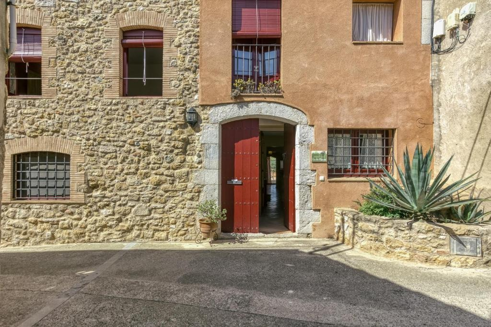
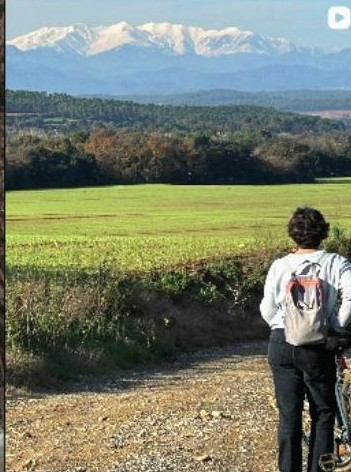
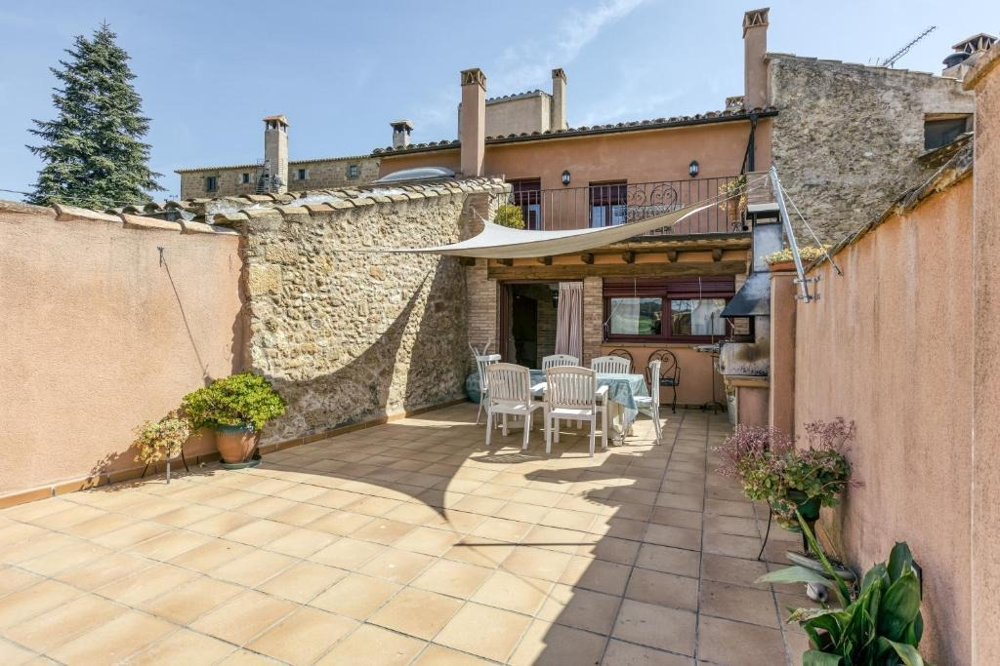
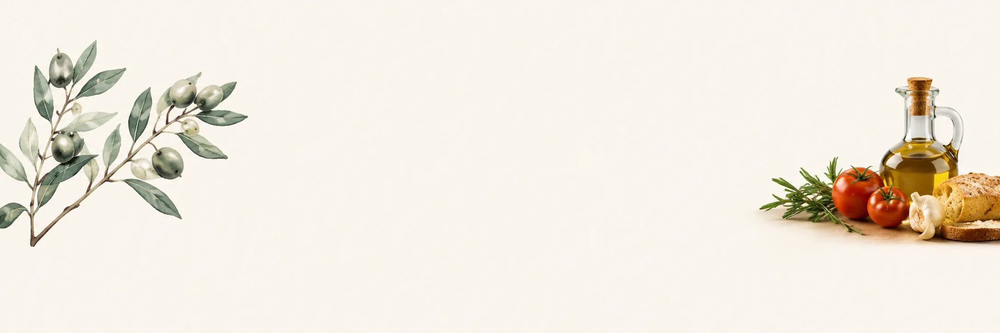

Història, natura i moments compartits
La casa, l’Empordà i les persones que us hi rebem.
Benvinguts a Ca la Maria
Una casa pensada per retrobar-se
Ca la Maria és molt més que un lloc on dormir. És una casa pensada per retrobar-se, compartir i gaudir de les petites coses sense presses.
Som una casa rural a Orriols, un petit poble de l’Alt Empordà. Rebem famílies, grups d’amics i persones que busquen un lloc tranquil des d’on descobrir la gastronomia, la natura i els pobles de la comarca.
Ens agrada que l’estada sigui més que un llit: per això, a més de l’allotjament, preparem experiències gastronòmiques, tallers de ioga i rutes en bicicleta pensades per gaudir del territori.
Cuina · Territori · Persones

El que ens mou
Tres maneres d’entendre l’hospitalitat
Cuina
Productes de proximitat, productors locals i taules llargues. Mengem bé perquè viure millor també passa pel plat.
Territori
L’Empordà és camps, vinyes, pobles de pedra i mar. Us ajudem a descobrir-lo sense pressa i sense carreres.
Persones
Una casa gran només té sentit quan s’omple de converses. Ens agrada que cada grup se senti com a casa.

La casa
Pedra, fusta i llum de l’Empordà
Ca la Maria és una casa de poble de pedra, amb bigues de fusta, ceràmica i racons pensats per compartir: cuina oberta, menjador per a 18 comensals, terrassa amb barbacoa i cinc habitacions.

T’esperem
Vols conèixer-nos?
Explica’ns qui veniu i què us ve de gust fer: us ajudem a preparar l’estada.